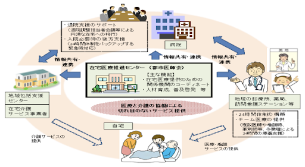

ワーキンググループ
令和３年1 0月1 3日 資料２
⚪︎ 医療と介護の両方を必要とする状態の高齢者が、住み慣れた地域で自分らしい暮らしを続けることができるよう、地域における医療・介護の関係機関（※）が連携して、包括的かつ継続的な在宅医療・介護を提供することが重要。
（※）在宅療養を支える関係機関の例
・診療所・在宅療養支援診療所・歯科診療所等（定期的な訪問診療等の実施）
・病院・在宅療養支援病院・診療所（有床診療所）等（急変時の診療・一時的な入院の受入れの実施）
・訪問看護事業所、薬局（医療機関と連携し、服薬管理や点滴・褥瘡処置等の医療処置、看取りケアの実施等）
・介護サービス事業所（入浴、排せつ、食事等の介護の実施）
○ このため、関係機関が連携し、多職種協働により在宅医療・介護を一体的に提供できる体制を構築するため、都道府県・保健所の支援の下、市区町村が中心となって、地域の医師会等と緊密に連携しながら、地域の関係機関の連携体制の構築を推進する。
在宅医療・介護連携推進事業の在り方
＜市町村における庁内連携＞総合事業など他の地域支援事業との連携や、災害・救急時対応の検討
| 都道府県(保健所等)による支援 |
⚪︎ 在宅医療・介護連携推進のための技術的支援 ◾️ 分析に必要なデータの分析・活用の支援 ◾️ 他市町村の取組事例の横展開 ◾️ 市町村の実情に応じた資源や活動をコーディネートできる人材の育成 |
|---|---|
|
⚪︎ 在宅医療・介護連携に関する関係市町村等の連携 ◾ 二次医療圏内にある市町村等及び二次医療圏をまたぐ広域連携が必要な事項について検討・支援 ◾ 都道府県の医療及び福祉の両部局の連携 ◾ 関係団体（都道府県医師会などの県単位の機関）との調整や、市町村が地域の関係団体と連携体制を構築する際の支援 |
|
|
⚪︎地域医療構想・医療計画との整合 |
※1:市町村単独での相談窓口設置が困難な場合は、柔軟な対応も検討
⚪︎ 「在宅医療の体制構築に係る指針」において、①退院支援、②日常療養支援、③急変時の対応、④看取りの在宅医療の４つの機能の整備に向け、「在宅医療に必要な連携を担う拠点」を、医療計画に位置付けることが望ましいとされている。
⚪︎ 「在宅医療に必要な連携を担う拠点」に求められる事項において、「在宅医療において積極的役割を担う医療機関」の目標や求められる事項と重複している内容がある。
＜「在宅医療の体制構築に係る指針」＞
第２ 医療体制の構築に必要な事項
２ 各医療機能との連携
(６) 在宅医療に必要な連携を担う拠点
前記（１）から（４）までに掲げる目標の達成に向けて、地域の実情に応じ、病院、診療所、訪問看護事業所、地域医師会等関係団体、保健所、市町村等の主体のいずれかを在宅医療に必要な連携を担う拠点として医療計画に位置付けることが望ましい。
在宅医療に必要な連携を担う拠点を医療計画に位置付ける際には、市町村が在宅医療・介護連携推進事業において実施する取組や、障害福祉に係る相談支援の取組との整合性に留意し、事前に市町村と十分に協議することが重要である。
なお、前項の在宅医療において積極的役割を担う医療機関が在宅医療に必要な連携を担う拠点となることも想定される。
① 目標
・ 多職種協働による包括的かつ継続的な在宅医療の提供体制の構築を図ること
② 在宅医療に必要な連携を担う拠点に求められる事項
・ 地域の医療及び介護、障害福祉関係者による会議を定期的に開催し、在宅医療における連携上の課題の抽出及びその対応策の検討等を実施すること
・ 地域の医療及び介護、障害福祉サービスについて、所在地や機能等を把握し、地域包括支援センターや障害者相談支援事業所等と連携しながら、退院時から看取りまでの医療や介護、障害福祉サービスにまたがる様々な支援を包括的かつ継続的に提供するよう、関係機関との調整を行うこと
・質の高い在宅医療をより効率的に提供するため、関係機関の連携による24時間体制の構築や多職種による情報共有の促進を図ること
・在宅医療に関する人材育成及び普及啓発を実施すること
「疾病・事業及び在宅医療に係る医療体制について」（平成29年3月31日医政局地域医療計画課長通知（令和２年４月13日一部改正））より一部抜粋。
⚪︎ 現行の指針において、在宅医療に必要な連携を担う拠点を医療計画に位置付ける際には「市町村が在宅医療・介護連携推進事業において実施する取組との整合性に留意する」との記載されている。
⚪︎ 「在宅医療・介護連携推進事業」の事業内容は、「在宅医療に必要な連携を担う拠点」との連携が有効なものとなっている。
※ 在宅医療・介護連携推進事業の手引きVer.3（令和２年9月）
⚪︎ 在宅医療・介護連携において「在宅医療・介護連携推進事業」が重要な役割を果たしているが、地域によっては介護主体で進められており、人材の不足や医療との連携が課題となっている。
⚪︎ 市区町村と都道府県、行政内の関係部局との協調も課題であり、地域の実情を踏まえた「在宅医療・介護連携推進事業」と「在宅医療に必要な連携を担う拠点」の連携が効果的と考えられる。
市町村が在宅医療・介護連携推進事業を実施していく中で課題だと感じているもの
・高齢化が進展する中、在宅医療の需要増が見込まれている
・在宅医療に係る多職種連携が十分でなく、医師の負担が大きい
・地域の実情に合った在宅医療提供体制を構築する必要がある
１．令和4年度予算：85,419千円（特財・地域医療介護総合確保基金）
２．事業目的
住み慣れた自宅や地域での療養を希望する人が在宅医療を受けられるよう、医療従事者等の負担軽減の仕組みづくりや多職種連携の仕組みづくりなどを通じて、地域における在宅医療の受け皿の拡充を図る。（在宅医療推進センター設置・運営及び在宅医療ＩＣＴ構築に対し補助、平成27年10月～）
３．取組の特長（特に工夫している部分に下線）
・ 県全域をカバーする県医師会と各地域の実情に応じた対応が可能な各郡市医師会がそれぞれ「在宅医療推進センター」を設置
・ 多職種間で患者情報等の共有を行う在宅医療ＩＣＴシステムを整備
・県医師会及び県内全１６郡市医師会に計１７か所の在宅医療推進センターを設置済み
・１６郡市医師会のうち、１２郡市医師会で在宅医療ICTシステムを整備・運用中
・各郡市医師会在宅医療推進センター主導で地域の入退院支援推進のための取組を実施
（令和４年３月末現在）
・在宅医療･介護連携事業の一部または全部を推進センターに委託し、事業を展開している市町村もあり、事業全体を精査し効率的な計画、実施をしている。
＜事業推進上の課題＞
⚪︎ 各在宅医療推進センターの更なる体制強化が必要
⚪︎ 各市町村の在宅医療・介護連携推進事業との更なる連携
（現在、30市町村のうち15ヶ所が拠点へ業務委託。それ以外は拠点と各支町村が月に一回の会議を開催）
＜横展開に向けての提言＞
⚪︎規制緩和：ＩＣＴに係る患者情報の利用に関する手続きの簡素化
⚪︎財政支援：事業の安定実施に向け、地域医療介護総合確保基金の都道府県要望額満額交付
・H29まで郡市区医師会に連携拠点事業として、補助していたが、H30から、市町村においては、在宅医療と介護の連携推進が介護保険法の地域支援事業として位置づけられたため、市町村と県での事業のすみわけを整理した。
・拠点整備事業の実施により、在宅医療・介護の連携体制は徐々に構築されつつあるが、さらなる受け皿の拡大のため、充実強化事業として、県が市町村（郡市区医師会）に広域的・補完的な取組の支援を実施。
・市町村が地域支援事業の中でどの程度の役割を委託しているか、マンパワーや医療資源等の違いから、市町村と郡市区医師会の事業の役割分担は地域により差がある。
・福岡県は、ほぼすべての市町村で郡市区医師会に在宅医療・介護連携事業の委託を行っており、原則として、郡市区医師会が中心となり、在宅医療・介護連携を推進しているところだが、県としては、在宅医療・介護連携従事者として、市町村・保健所の職員にも研修会等を通じて、事業の推進を呼び掛けている。郡市区医師会・市町村・保健所等が協議の場等で話し合い、地域の役割分担の中で協力して事業を推進していくのが望ましいと考えている。

● 現行の指針では「在宅医療・介護連携推進事業において実施する取組との整合性に留意する」との記載であるが、「在宅医療・介護連携推進事業」と「在宅医療に必要な連携を担う拠点」の連携の有効性の観点から、同一の実施主体となりうることも含め、両者の関係について次期指針において記載してはどうか。
● 「在宅医療に必要な連携を担う拠点」の整備状況や「在宅医療・介護連携推進事業」との連携について、実態把握をどのように行い進捗を評価していくか。